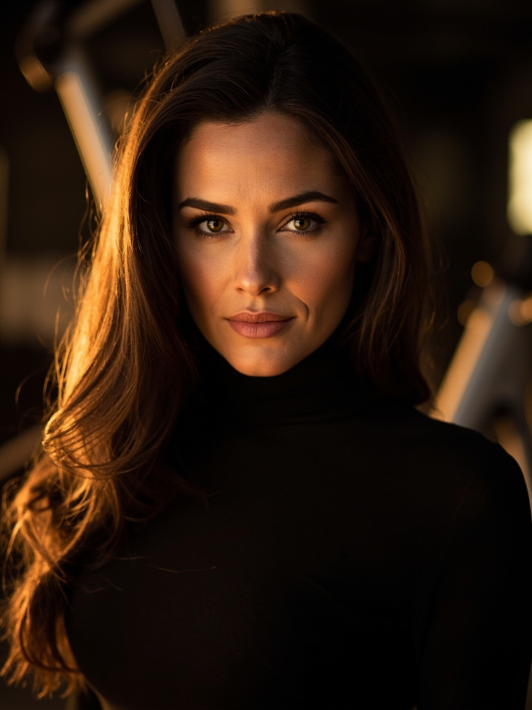

"Dia bukan pasal body sahaja. Dia pasal consistency, ownership, dan tak cari excuse bila kerja kena buat."
Satu benda yang kaum sado nampak dalam Aletta — discipline yang berjalan senyap. Bukan athlete professional. Bukan fitness competitor. Tapi dia maintain physique Voluptuous yang athletic-leaning tu selama hampir 20 tahun. Macam ni — kalau hang pergi gym hari ni dan 5 minggu tak pergi, hang akan rasa 5 kali ganda lebih berat. Dia kata sendiri. Tu level of body awareness yang sado respect.
Dua, dia owner of distribution. AVN Awards 2010 — Female Foreign Performer of the Year dan Best Sex Scene in a Foreign-Shot Production (Dollz House, Harmony Films). Selepas tu dia bina own platform. Tak ride solely on studio release schedule. Hari ni dia still drop content kat alettaoceanlive.com — kira-kira dua scene sebulan, direct-to-fan. Sado pun begitu — kalau boleh control the supply chain, control it. Jangan harap orang lain buat schedule hidup hang.
Tiga, dia retire sikit, then comeback bila dia nak. Forum perbicaraan industry cakap dia "never really retired" — release sendiri kat own site, intermittent appearances kat major studios bila dia rasa. Tu model sado — jangan biar industri dictate bila hang peak atau bila hang rehat. Hang decide.
Empat, hourglass proportions yang natural-leaning. 38-26-37 (in) atau 97-66-94 (cm). Bukan extreme shredded, bukan skinny-fat. Tu badan yang gym boleh produce tapi kekalkan punya — nutrition + training + sleep consistency. Macam Syed nak Physique 2027 — tu journey, bukan sprint.